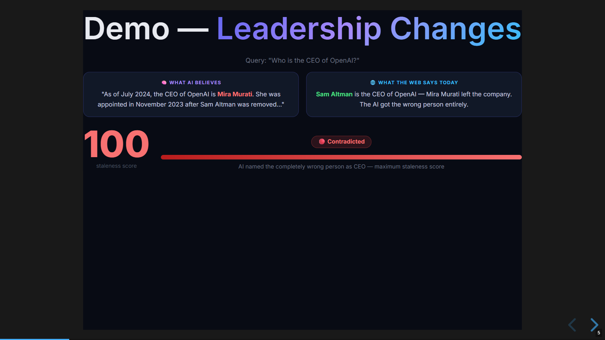
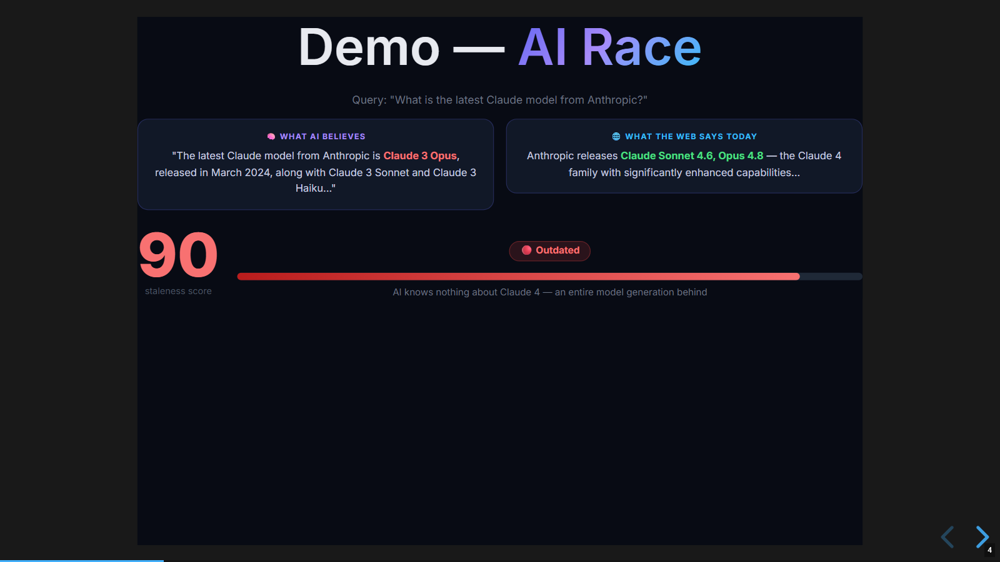
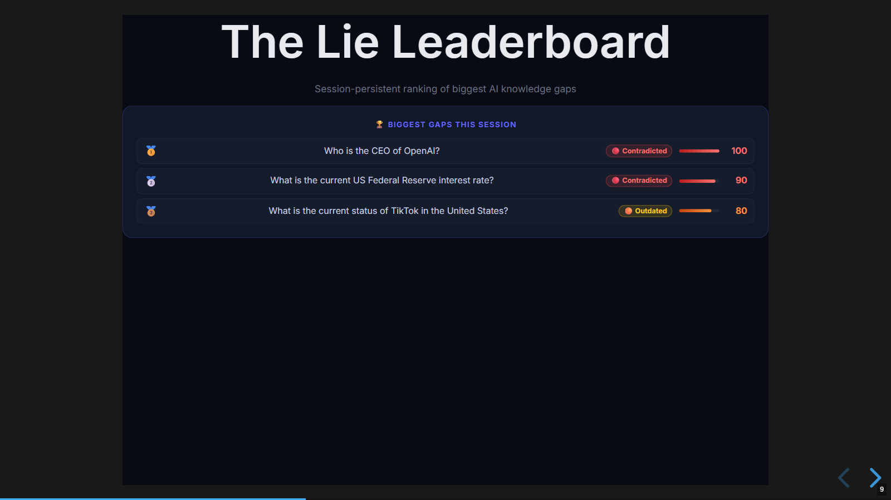
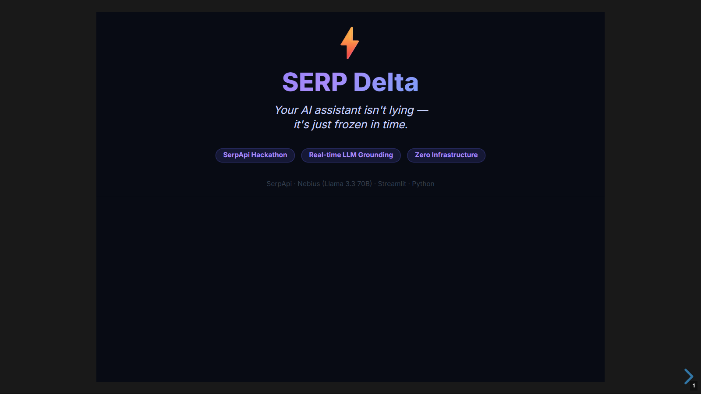

What It Does
Ask any time-sensitive question. SERP Delta runs it through an LLM and through live Google simultaneously, then computes a structured score of the gap between frozen training data and current reality.
Staleness Score
0 = perfectly fresh. 100 = completely wrong. Computed by a second LLM reading both answers.
Specific Discrepancies
“AI says X, web says Y.” Named, citable findings — not just a feeling something is off.
Knowledge Timeline
Visual bar showing how many months the AI’s answer appears to lag behind current reality.
Side-by-Side View
AI training answer left, live Google snippets right. The gap is visible before you read the verdict.
Lie Leaderboard
Session-ranked table of every gap you’ve found. People compete to find the most outdated answer.
Demo Mode
9 pre-loaded results, zero API keys. The app works the moment you open it.
The Inversion
Everyone uses SerpApi the same way. SERP Delta uses it differently.
This is a paradigm inversion: the search results aren’t the product — they’re the benchmark. SerpApi becomes an accuracy validator, not a content source. Nobody was doing this.
vs RAG
RAG (Retrieval-Augmented Generation) is the industry standard for solving LLM staleness. It works — but it’s heavyweight. SERP Delta is the lightweight alternative for external knowledge validation.
The tradeoff is real: RAG wins on private/internal knowledge (documents, databases, intranets). SERP Delta wins on public, fast-moving facts. For external knowledge that changes often, the RAG overhead is rarely worth it.
Where It Fits
Any domain where AI answers drive decisions and facts change faster than training cycles.
See It In Action
The CEO query became the defining moment. Score 100, Contradicted, caught in three seconds.




How It Works
Two threads. Three cache layers. One structured JSON diff. The critical design decision: LLM answer and live web fetch start at the same time. Neither waits for the other.
-
1
Query submitted
run_pipeline(query)launches twoThreadPoolExecutorworkers simultaneously. -
2
LLM answer (parallel thread A)
Checks
llm_cache/first (7-day disk TTL). Cache miss → Nebius Qwen3-32B answers from training data. Training answers are deterministic — cache them for days, not minutes. -
3
Live web data (parallel thread B)
Checks
serp_cache/first (24h disk TTL). Cache miss → SerpApi Google Search + Google News run in a nested executor. Two calls in parallel, not serial. -
4
Delta computed
compute_delta()sends both answers to Nebius Llama 3.3 70B with a structured prompt. Returns JSON:staleness_score,verdict,discrepancies,ai_likely_cutoff_hint. -
5
Results rendered
Score card, timeline, side-by-side comparison, discrepancies list. Leaderboard and quota counter updated on the main thread only — never inside a worker.
Real Learnings
st.session_state from inside a ThreadPoolExecutor worker throws missing ScriptRunContext and corrupts data silently. Every Streamlit write must happen on the main thread, after the executor finishes. Zero exceptions.json.loads(response) fails about 20% of the time without stripping. A small extraction function that strips fences and finds the first { } span fixed it completely.Moments In Between
What’s Next
The MVP validates the core idea. These are the features worth building next, ranked by impact vs effort.